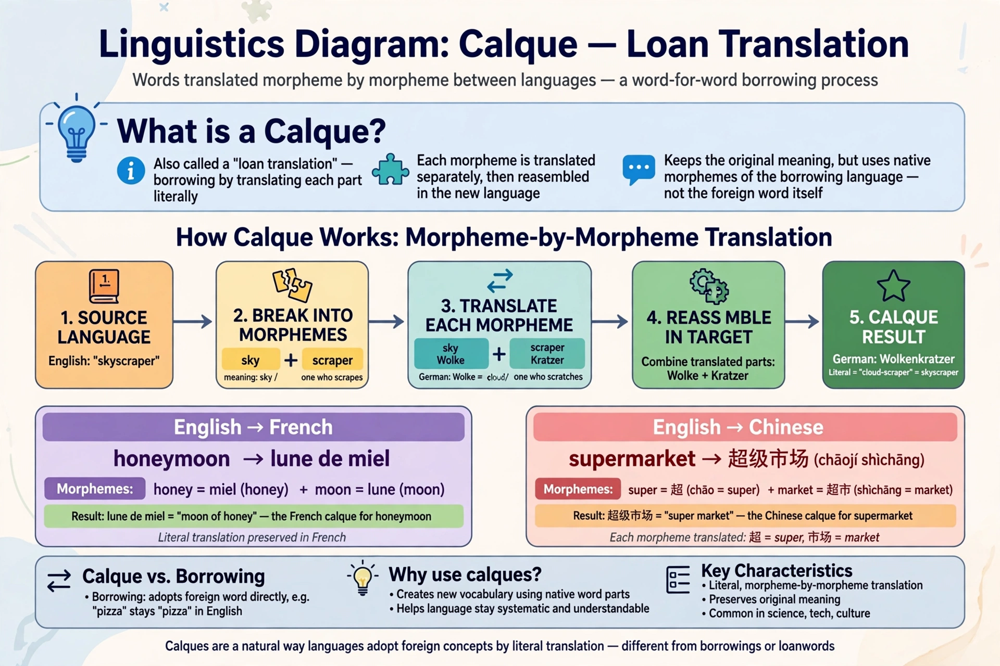

In linguistics, a calque (from French calque, "tracing, imitation") or loan translation is a word or phrase borrowed from another language by literal word-for-word translation of its components.
| Calque | |
|---|---|
 | |
| Type | Borrowing / word formation |
English skyscraper was calqued into many languages, e.g. French gratte-ciel and Spanish rascacielos. English superman is a calque of German Übermensch; world view calques German Weltanschauung; flea market calques French marché aux puces. Computer terms such as French courriel illustrate deliberate calquing and coinage.
Scholars distinguish full and partial calques, semantic calques (where an existing word takes on a new meaning modelled on a foreign word), and phraseological calques of idioms. Calques contrast with loanwords, in which the foreign form itself is adopted, as in English café.
Recreated from memory.